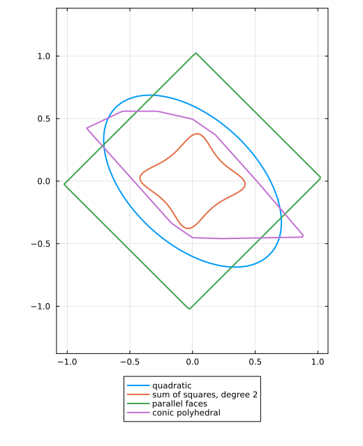

Choosing a template
The template is the family the node functions are drawn from. In the program that certify solves, it gives the variables and decides the kind of program, semidefinite or linear; with the graph, it decides how good the certificate can be and how much it costs (see How a certificate works). This page shows what a template changes, lists the templates, and helps you choose.
The code on this page uses the running example of Systems and problems: system, problem = PCC.StabilityProblem(system) and graph = PCC.common_graph(system), solved with Clarabel and HiGHS.
What a template changes
The template fixes the shape of the node functions, and so the bound and the program, which sets the solver:
quadratic = PCC.certify(PCC.QuadraticTemplate(), graph, problem; optimizer = Clarabel.Optimizer)
copositive = PCC.certify(PCC.LinearCopositiveTemplate(), graph, problem; optimizer = HiGHS.Optimizer)
quadratic.rate, copositive.rate(0.9586944580078125, 0.9269752502441406)The quadratic template solves a semidefinite program, with Clarabel; the linear copositive template a linear program, with HiGHS. The latter applies here because the matrices have nonnegative entries.
The level set $V(x) = 1$ of the certificate that four templates find on the running example shows their shapes:

The templates
| Template | Node function | Systems | Program | Problems |
|---|---|---|---|---|
QuadraticTemplate() | $x^\top P x$ | all | semidefinite | stability, safety, optimal control |
SumOfSquaresTemplate(d, x) | a sum of squares of polynomials of degree $d$ | all | semidefinite | stability |
LinearCopositiveTemplate() | $c^\top x$ | positive | linear | stability |
DualCopositiveTemplate() | $\max_i x_i / v_i$ | positive | linear | stability |
ParallelFacesPolyhedralTemplate(n_nodes, n) | $\max_k \lvert (G x)_k \rvert / w_k$ | all | linear | stability |
ConicPolyhedralTemplate(partitions) | $\max_i \lvert p_i^\top x \rvert$ | all | linear | stability |
Ellipsoid(symmetric = true, piecewise = P) | quadratic on each cone of $P$ | all | semidefinite | stability |
Polytope(symmetric = true, piecewise = P) | linear on each cone of $P$ | all | linear | stability |
Templates are SetProg families. Each constructor returns a SetProg family of sets, and a node function stands for its set $\{x : V(x) \le 1\}$: QuadraticTemplate(), for instance, is Ellipsoid(symmetric = true). A stability certificate holds these sets, which node_value evaluates. The last two rows are SetProg families passed directly, piecewise on the cones over the facets of a polytope $P$. To write them, run Pkg.add("SetProg") and using SetProg: the package depends on SetProg, so nothing new is downloaded, but your environment must list it for Julia to load it by name.
How to choose
- Start with
QuadraticTemplate(). It applies to every system and every problem. - For a positive system, whose matrices have nonnegative entries, so that trajectories that start in the nonnegative orthant stay there:
LinearCopositiveTemplate()andDualCopositiveTemplate(), defined on that orthant, solve linear programs. - For a polyhedral function on any system, two templates solve linear programs:
ParallelFacesPolyhedralTemplate(n_nodes(graph), n)fixes the normals of the faces: the axes by default, or the rows of a matrix $G$ per node, given instead. The normals matter: on the running example, the axes give a bound of about $1.30$, above one, and the diagonals,ParallelFacesPolyhedralTemplate([[1.0 1.0; -1.0 1.0]]), about $0.92$;ConicPolyhedralTemplate(partitions)fixes, at each node, a partition of the space into the cones over the facets of a polytope, on each of which the function is linear; in the plane,planar_conic_partitionbuilds one.
- For a polynomial function,
SumOfSquaresTemplate(d, x), with the variables@polyvar x[1:n]of DynamicPolynomials, and the SumOfSquares package loaded (see Installation). Degree 1 gives the quadratic forms; each higher degree adds variables. - For a function piecewise on cones, a SetProg family passed directly:
Ellipsoid(symmetric = true, piecewise = P), quadratic on each cone, orPolytope(symmetric = true, piecewise = P), linear on each; see Try a richer template.
Which template gives the lowest bound depends on the system, and a template with more variables builds a larger program: try several. What works with what lists the problems and methods each template supports.
Adding a template
A new template is a SetProg family: see Extending the package.